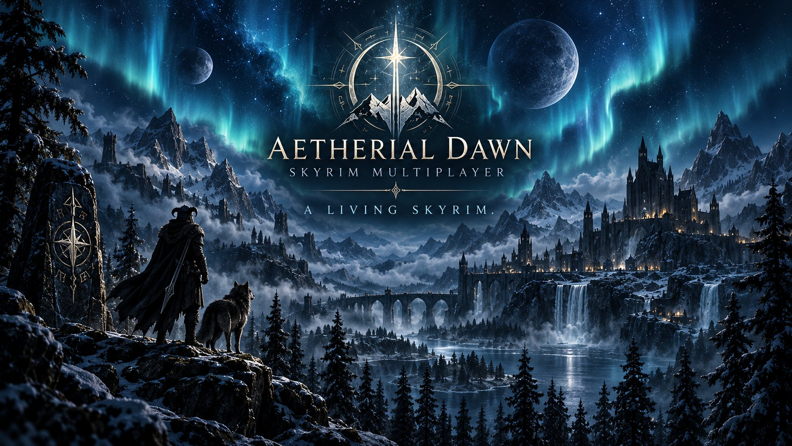

“SAME SKY. MORE STORIES.”
Aetherial Dawn is a community-driven Skyrim multiplayer world. Forge your own story in a shared land where every journey matters, and your character, home and coin carry over between sessions.
The server decides which mods and files every player needs.
| FILE | SIZE |
|---|
News from the server will show here.
News from the server will show here.
In game, press F3 for the menu.
The launcher checks your game, installs the multiplayer files, and connects you to Aetherial Dawn. Your saves and other mods are left alone.
Aetherial Dawn is for members of our Discord community. Sign in so the server knows it's you. Discord asks for your password in your browser, never here.
Not a member yet? Join here:
Your Skyrim folder has plugins that aren't part of Aetherial Dawn. They load together with the multiplayer files and often crash Skyrim before the main menu. The launcher moves them to a backup folder or switches them off. Nothing is deleted, and you can put them back in Settings.
Install, enable and deploy these mods in Vortex. For linked Nexus mods, use Mod Manager Download for the required file. The file list does not confirm deployment.
The launcher saved a report with the game's logs. Click Copy report and paste it to staff on Discord so they can see what went wrong.
The launcher checks your Skyrim folder for the problems that most often crash the game before the main menu.